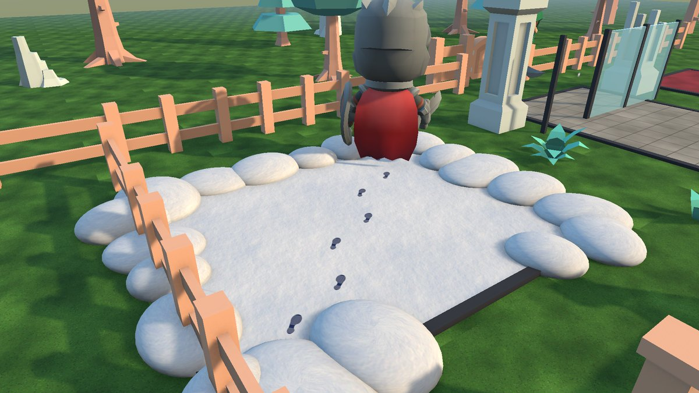

Effects and footprints


Step effects #
Give a surface a Step Effect prefab (and optionally a Land Effect): dust on gravel, splashes in water, bits of grass. Any prefab works; particle systems in it are restarted each time. Effects are pooled (up to 16 copies of each), so steps never create objects or garbage. Landings scale the effect up for a harder fall. The profile's Effect Scale sizes them all; Show Effects turns them off.
The samples include Dust Puff, Grass Bits, Splash and Snow Puff, drawn with Responsive FX's own shader.
Footprints #
Footprints appear on surfaces with Footprints ticked (Snow, Gravel and Grass in the sample library), in that surface's Footprint Colour, when the profile's Show Footprints is on and it has a Footprint Picture. They're pooled (Max Footprints, oldest reused), stay for Lifetime seconds and fade over Fade seconds. Each print follows the ground's slope and the direction of travel; left and right alternate (the left is the picture mirrored). With foot bones set, prints land exactly under each foot. Landings leave both feet.
Footprints use Responsive FX's Unlit Transparent shader, which has Built-in, URP and HDRP versions, so they look the same in every pipeline and never flicker on the ground. You can give the profile your own material instead.
The samples include a shoe print and a paw print.